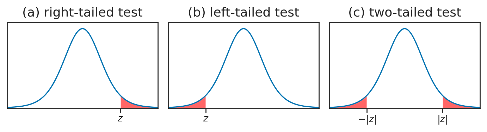
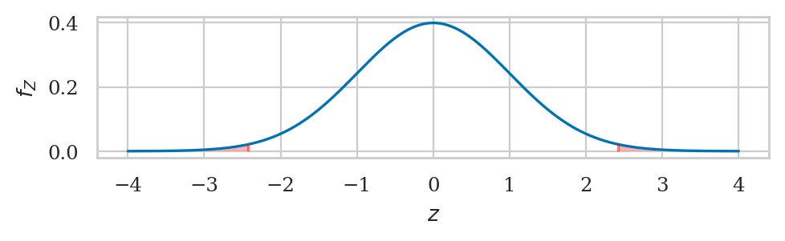
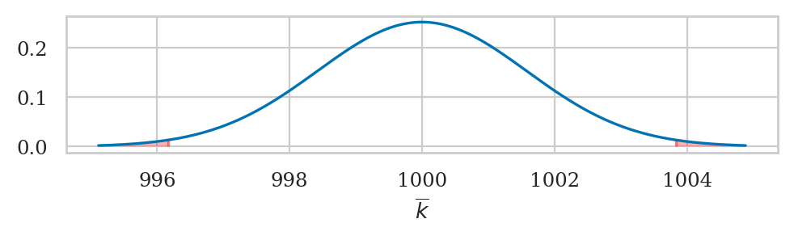
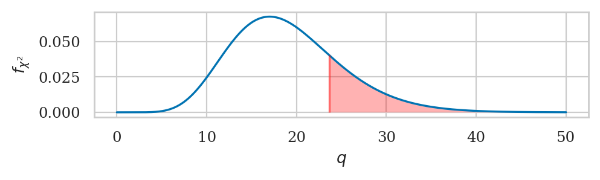
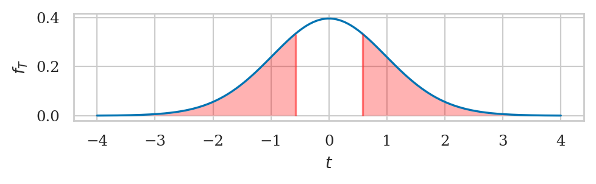

Section 3.4 — Hypothesis testing using analytical approximations#
This notebook contains the code examples from Section 3.4 Hypothesis testing using analytical approximations of the No Bullshit Guide to Statistics.
Notebook setup#
# load Python modules
import os
import numpy as np
import pandas as pd
import seaborn as sns
import matplotlib.pyplot as plt
# Plot helper functions
from plot_helpers import nicebins
from plot_helpers import plot_pdf
from plot_helpers import savefigure
# Figures setup
plt.clf() # needed otherwise `sns.set_theme` doesn't work
from plot_helpers import RCPARAMS
# RCPARAMS.update({'figure.figsize': (10, 3)}) # good for screen
RCPARAMS.update({'figure.figsize': (5, 1.6)}) # good for print
sns.set_theme(
context="paper",
style="whitegrid",
palette="colorblind",
rc=RCPARAMS,
)
# Useful colors
snspal = sns.color_palette()
blue, orange, purple = snspal[0], snspal[1], snspal[4]
# red = sns.color_palette("tab10")[3]
# High-resolution please
%config InlineBackend.figure_format = 'retina'
# Where to store figures
DESTDIR = "figures/stats/intro_to_NHST"
<Figure size 640x480 with 0 Axes>
# set random seed for repeatability
np.random.seed(42)
\(\def\stderr#1{\mathbf{se}_{#1}}\) \(\def\stderrhat#1{\hat{\mathbf{se}}_{#1}}\) \(\newcommand{\Mean}{\textbf{Mean}}\) \(\newcommand{\Var}{\textbf{Var}}\) \(\newcommand{\Std}{\textbf{Std}}\) \(\newcommand{\Freq}{\textbf{Freq}}\) \(\newcommand{\RelFreq}{\textbf{RelFreq}}\) \(\newcommand{\DMeans}{\textbf{DMeans}}\) \(\newcommand{\Prop}{\textbf{Prop}}\) \(\newcommand{\DProps}{\textbf{DProps}}\)
(this cell contains the macro definitions like \(\stderr{\overline{\mathbf{x}}}\), \(\stderrhat{}\), \(\Mean\), …)
Definitions#
def mean(sample):
return sum(sample) / len(sample)
def var(sample):
xbar = mean(sample)
sumsqdevs = sum([(xi-xbar)**2 for xi in sample])
return sumsqdevs / (len(sample)-1)
def std(sample):
s2 = var(sample)
return np.sqrt(s2)
Hypothesis testing using analytical approximations#
Definitions#
test statistic
sampling distribution of the test statistic
pivotal transformation
reference distributions
Selecting the tails of a probability distribution#
def tailprobs(rv, obs, alt="two-sided"):
"""
Calculate the probability of all outcomes of the random variable `rv`
that are equal or more extreme than the observed value `obs`.
"""
if alt == "greater":
pvalue = 1 - rv.cdf(obs)
elif alt == "less":
pvalue = rv.cdf(obs)
elif alt == "two-sided":
mean = rv.mean()
dev = abs(obs - mean)
pleft = rv.cdf(mean - dev)
pright = 1 - rv.cdf(mean + dev)
pvalue = 2 * min(pleft, pright)
return pvalue
Right tail \(p\)-value calculation#
from scipy.stats import norm
rvZ = norm(0,1)
tailprobs(rvZ, 2, alt="greater")
0.02275013194817921
1 - rvZ.cdf(2)
0.02275013194817921
from scipy.integrate import quad
quad(rvZ.pdf, 2, np.infty)[0]
0.02275013194817598
Two-sided \(p\)-value calculation#
from scipy.stats import norm
rvZ = norm(0,1)
tailprobs(rvZ, 2)
0.04550026389635839
# left tail # right tail
rvZ.cdf(-2) + (1 - rvZ.cdf(2))
0.0455002638963584
(CUTTABLE) Note the function tailprobs computes the answer the question “values of rv that deviate from the mean as much as obs or more,” which we can illustrate with “two standard deviations away from the mean” calculations when the sampling distribution is a normal centred at 3.
rvZ3 = norm(3, 1)
tailprobs(rvZ3, 3+2)
0.04550026389635839
Tailsfig pdf#
One-sided and two-sided p-value calculations based on an analytical formula for the sampling distribution.
filename = os.path.join(DESTDIR, "panel_p-values_z_left_twotailed_right_tests.pdf")
from scipy.stats import t as tdist
rvT = tdist(9)
xs = np.linspace(-4, 4, 1000)
ys = rvT.pdf(xs)
with plt.rc_context({"figure.figsize":(7,2)}), sns.axes_style("ticks"):
fig, (ax3, ax1, ax2) = plt.subplots(1,3)
# RIGHT
title = '(a) right-tailed test'
ax3.set_title(title, fontsize=13)#, y=-0.26)
sns.lineplot(x=xs, y=ys, ax=ax3)
ax3.set_xlim(-4, 4)
ax3.set_ylim(0, 0.42)
ax3.set_xticks([2])
ax3.set_xticklabels([])
ax3.set_yticks([])
# highlight the right tail
mask = (xs > 2)
ax3.fill_between(xs[mask], y1=ys[mask], alpha=0.6, facecolor="red")
ax3.text(2, -0.03, "$z$", verticalalignment="top", horizontalalignment="center")
# LEFT
title = '(b) left-tailed test'
ax1.set_title(title, fontsize=13) #, y=-0.26)
sns.lineplot(x=xs, y=ys, ax=ax1)
ax1.set_xlim(-4, 4)
ax1.set_ylim(0, 0.42)
ax1.set_xticks([-2])
ax1.set_xticklabels([])
ax1.set_yticks([])
# highlight the left tail
mask = (xs < -2)
ax1.fill_between(xs[mask], y1=ys[mask], alpha=0.6, facecolor="red")
ax1.text(-2, -0.03, r"$z$", verticalalignment="top", horizontalalignment="center")
# TWO-TAILED
title = '(c) two-tailed test'
ax2.set_title(title, fontsize=13)#, y=-0.26)
sns.lineplot(x=xs, y=ys, ax=ax2)
ax2.set_xlim(-4, 4)
ax2.set_ylim(0, 0.42)
ax2.set_xticks([-2,2])
ax2.set_xticklabels([])
ax2.set_yticks([])
# highlight the left and right tails
mask = (xs < -2)
ax2.fill_between(xs[mask], y1=ys[mask], alpha=0.6, facecolor="red")
ax2.text(-2, -0.03, r"$-|z|$", verticalalignment="top", horizontalalignment="center")
mask = (xs > 2)
ax2.fill_between(xs[mask], y1=ys[mask], alpha=0.6, facecolor="red")
ax2.text(2, -0.03, r"$|z|$", verticalalignment="top", horizontalalignment="center")
savefigure(fig, filename)
Saved figure to figures/stats/intro_to_NHST/panel_p-values_z_left_twotailed_right_tests.pdf
Saved figure to figures/stats/intro_to_NHST/panel_p-values_z_left_twotailed_right_tests.png

muK0 = 1000
sigmaK0 = 10
Analytical approximation for sample mean#
# norm
Example 1N: test for the mean of Batch 04#
kombucha = pd.read_csv("../datasets/kombucha.csv")
batch04 = kombucha[kombucha["batch"]==4]
ksample04 = batch04["volume"]
# sample size
n04 = len(ksample04)
n04
40
# observed mean
obsmean04 = mean(ksample04)
obsmean04
1003.8335
# standard error of the mean
se04 = sigmaK0 / np.sqrt(n04)
se04
1.5811388300841895
# compute the z statistic
obsz04 = (obsmean04 - muK0) / se04
obsz04
2.42451828205107
from scipy.stats import norm
rvZ = norm(0,1)
pvalue04 = tailprobs(rvZ, obsz04, alt="two-sided")
pvalue04
0.015328711497996425
filename = os.path.join(DESTDIR, "p-value_tails_kombucha_obsz04.pdf")
from plot_helpers import calc_prob_and_plot_tails
_, ax = calc_prob_and_plot_tails(rvZ, -obsz04, obsz04, xlims=[-4,4])
ax.set_title(None)
ax.set_xlabel("$z$")
ax.set_ylabel("$f_Z$")
savefigure(ax, filename)
Saved figure to figures/stats/intro_to_NHST/p-value_tails_kombucha_obsz04.pdf
Saved figure to figures/stats/intro_to_NHST/p-value_tails_kombucha_obsz04.png

Alternative calculations#
Using direct evaluation of the cumulative distribution function \(F_Z\).
# left tail + # right tail
rvZ.cdf(-obsz04) + (1 - rvZ.cdf(obsz04))
0.015328711497996476
Using integration of the probability mass function \(f_Z\).
from scipy.integrate import quad
fZ = rvZ.pdf
oo = np.infty
# left tail # right tail
quad(fZ, -oo, -obsz04)[0] + quad(fZ, obsz04, oo)[0]
0.015328711497995967
Note also the pivotal transformation to the standard \(Z\) is not necessary. We could have obtained the same \(p\)-value directly from the sampling distribution of the mean, which is described by a non-standard normal distribution:
from scipy.stats import norm
rvKbar0 = norm(loc=muK0, scale=se04)
tailprobs(rvKbar0, obsmean04)
0.015328711497996425
filename = os.path.join(DESTDIR, "p-value_tails_Example1N_Kbar0.pdf")
from plot_helpers import calc_prob_and_plot_tails
dev = abs(obsmean04-muK0)
_, ax = calc_prob_and_plot_tails(rvKbar0, muK0-dev, muK0+dev)
ax.set_title(None)
ax.set_xlabel("$\overline{k}$")
savefigure(ax, filename)
Saved figure to figures/stats/intro_to_NHST/p-value_tails_Example1N_Kbar0.pdf
Saved figure to figures/stats/intro_to_NHST/p-value_tails_Example1N_Kbar0.png

The \(p\)-value calculation is exactly the same.
Example 2N: test for the mean of Batch 01#
kombucha = pd.read_csv("../datasets/kombucha.csv")
ksample01 = kombucha[kombucha["batch"]==1]["volume"]
n01 = len(ksample01)
n01
40
# observed mean
obsmean01 = mean(ksample01)
obsmean01
999.10375
# standard error of the mean
se01 = sigmaK0 / np.sqrt(n01)
se01
1.5811388300841895
# compute the z statistic
obsz01 = (obsmean01 - muK0) / se01
obsz01
-0.5668382705851878
from scipy.stats import norm
rvZ = norm(0,1)
#######################################################
pvalue01 = tailprobs(rvZ, obsz01, alt="two-sided")
pvalue01
0.5708240666473916
The \(p\)-value is large, so there is no reason to reject \(H_0\). We conclude that Batch 01 must be regular.
filename = os.path.join(DESTDIR, "p-value_tails_kombucha_obsz01.pdf")
from plot_helpers import calc_prob_and_plot_tails
_, ax= calc_prob_and_plot_tails(rvZ, obsz01, -obsz01, xlims=[-4,4])
ax.set_title(None)
ax.set_xlabel("$z$")
ax.set_ylabel("$f_Z$")
savefigure(ax, filename)
Saved figure to figures/stats/intro_to_NHST/p-value_tails_kombucha_obsz01.pdf
Saved figure to figures/stats/intro_to_NHST/p-value_tails_kombucha_obsz01.png
Formula for sampling distribution of the variance#
Chi-square test for variance#
see also:
Example 3X: test for the variance of Batch 02#
kombucha = pd.read_csv("../datasets/kombucha.csv")
ksample02 = kombucha[kombucha["batch"]==2]["volume"]
n02 = len(ksample02)
n02
20
obsvar02 = var(ksample02)
obsvar02
124.31760105263136
obsq02 = (n02-1) * obsvar02 / sigmaK0**2
obsq02
23.62034419999996
from scipy.stats import chi2
rvX2 = chi2(n02 - 1)
pvalue02 = tailprobs(rvX2, obsq02, alt="greater")
pvalue02
0.2111207328360385
filename = os.path.join(DESTDIR, "p-value_right_tail_kombucha_obsq02.pdf")
_, ax = calc_prob_and_plot_tails(rvX2, 0, obsq02, xlims=[0,50])
ax.set_title(None)
ax.set_xlabel("$q$")
ax.set_ylabel("$f_{\chi^2}$")
savefigure(ax, filename)
Saved figure to figures/stats/intro_to_NHST/p-value_right_tail_kombucha_obsq02.pdf
Saved figure to figures/stats/intro_to_NHST/p-value_right_tail_kombucha_obsq02.png

The \(p\)-value is large, so there is no reason to reject \(H_0\).
Example 4X: test for the variance of Batch 08#
kombucha = pd.read_csv("../datasets/kombucha.csv")
ksample08 = kombucha[kombucha["batch"]==8]["volume"]
n08 = len(ksample08)
n08
40
obsvar08 = var(ksample08)
obsvar08
169.9979220512824
obsq08 = (n08-1) * obsvar08 / sigmaK0**2
obsq08
66.29918960000013
from scipy.stats import chi2
rvX2 = chi2(n08 - 1)
pvalue08 = tailprobs(rvX2, obsq08, alt="greater")
pvalue08
0.0041211873587608805
The \(p\)-value is vary small, so we reject \(H_0\).
According to our analysis based on the sample variance from Batch 08, this batch seems to be irregular: it has an abnormally large variance.
Effect size estimates#
obsvar08 - sigmaK0**2
69.99792205128239
from stats_helpers import ci_var
civar08 = ci_var(ksample08, alpha=0.1, method="a")
civar08
[121.48888239061654, 258.019779302895]
np.subtract(civar08, sigmaK0**2)
array([ 21.48888239, 158.0197793 ])
Recall the bootstrap confidence interval for the effect size we obtained earlier is \(\ci{\Delta,0.9}^* = [17.37,117.99]\).
Tests with estimated population variance#
Analytical approximation based on Student’s \(t\)-distribution#
Example 1T: test for the mean of Batch 04#
Assume we know mean, but not variance#
kombucha = pd.read_csv("../datasets/kombucha.csv")
ksample04 = kombucha[kombucha["batch"]==4]["volume"]
n04 = len(ksample04)
n04
40
# estimated standard error of the mean
s04 = std(ksample04)
s04
7.85217413955834
sehat04 = s04 / np.sqrt(n04)
sehat04
1.2415377432638601
# observed sample mean
obsmean04 = mean(ksample04)
obsmean04
1003.8335
# compute the t statistic
obst04 = (obsmean04 - muK0) / sehat04
obst04
3.087703149420272
from scipy.stats import t as tdist
df04 = n04 - 1 # n-1 degrees of freedom
rvT04 = tdist(df04)
pvalue04t = tailprobs(rvT04, obst04, alt="two-sided")
pvalue04t
0.0037056653503328985
Effect size estimates#
obsmean04 - muK0
3.833499999999958
from stats_helpers import ci_mean
ci_mean(ksample04-muK0, alpha=0.1, method="a")
[1.74166394645777, 5.9253360535422255]
# ALT. using existing function `scipy.stats`
from scipy.stats import ttest_1samp
ttest_1samp(ksample04, popmean=1000).pvalue
0.0037056653503329618
# no figure because too small
Example 2T: test for the mean of Batch 01#
kombucha = pd.read_csv("../datasets/kombucha.csv")
ksample01 = kombucha[kombucha["batch"]==1]["volume"]
# estimated standard error of the mean
s01 = std(ksample01)
n01 = len(ksample01)
sehat01 = s01 / np.sqrt(n01)
sehat01
1.5446402654597249
# observed sample mean
obsmean01 = mean(ksample01)
obsmean01
999.10375
# compute the t statistic
obst01 = (obsmean01 - muK0) / sehat01
obst01
-0.5802321874169595
from scipy.stats import t as tdist
df01 = n01 - 1 # n-1 degrees of freedom
rvT01 = tdist(df01)
pvalue01t = tailprobs(rvT01, obst01, alt="two-sided")
pvalue01t
0.5650956637295477
filename = os.path.join(DESTDIR, "p-value_tails_kombucha_obst01.pdf")
from plot_helpers import calc_prob_and_plot_tails
_, ax = calc_prob_and_plot_tails(rvT01, obst01, -obst01, xlims=[-4,4])
ax.set_title(None)
ax.set_xlabel("$t$")
ax.set_ylabel("$f_{T}$")
savefigure(ax, filename)
Saved figure to figures/stats/intro_to_NHST/p-value_tails_kombucha_obst01.pdf
Saved figure to figures/stats/intro_to_NHST/p-value_tails_kombucha_obst01.png

# ALT. using existing function `scipy.stats`
from scipy.stats import ttest_1samp
ttest_1samp(ksample01, popmean=1000).pvalue
0.5650956637295477
Bootstrap estimate of the standard error#
Another way to obtain the standard error of the mean (the standard deviation sampling distribution of the mean) is to use the bootstrap approach.
Example 1BT: test for the mean of Batch 04#
kombucha = pd.read_csv("../datasets/kombucha.csv")
ksample04 = kombucha[kombucha["batch"]==4]["volume"]
n04 = len(ksample04)
# bootstrap estimate for standard error of the mean
from stats_helpers import gen_boot_dist
kbars_boot04 = gen_boot_dist(ksample04, estfunc=mean)
sehat_boot04 = std(kbars_boot04)
sehat_boot04
1.2252842390160474
# compute the t statistic using bootstrap se
obst04bt = (obsmean04 - muK0) / sehat_boot04
obst04bt
3.128661805915673
from scipy.stats import t as tdist
rvT04 = tdist(n04 - 1)
pvalue04bt = tailprobs(rvT, obst04bt, alt="two-sided")
pvalue04bt
0.012147863549560177
The \(p\)-value is very small, so our decision is to reject \(H_0\).
Example 2BT: test for the mean of Batch 01#
kombucha = pd.read_csv("../datasets/kombucha.csv")
ksample01 = kombucha[kombucha["batch"]==1]["volume"]
n01 = len(ksample01)
# bootstrap estimate for standard error of the mean
from stats_helpers import gen_boot_dist
kbars_boot01 = gen_boot_dist(ksample01, estfunc=mean)
sehat_boot01 = std(kbars_boot01)
sehat_boot01
1.5501517384893604
# compute the t statistic using bootstrap se
obst01bt = (obsmean01 - muK0) / sehat_boot01
obst01bt
-0.5781692061148894
from scipy.stats import t as tdist
rvT01 = tdist(n01-1)
#######################################################
pvalue01bt = tailprobs(rvT01, obst01bt, alt="two-sided")
pvalue01bt
0.5664736858023267
The \(p\)-value is very large, so we have no reason to reject \(H_0\).